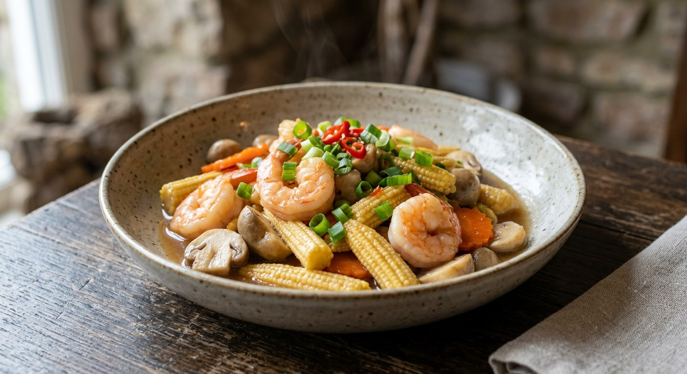

Stir-fried baby corn — crunchy young corn cobs wok-fried with your choice of prawns, pork or mushrooms in a light oyster-soy glaze. The quick, clean vegetable stir-fry that rounds out any Thai menu.

ผัดข้าวโพดอ่อน
Pad khao pord orn is the workhorse of Thai home cooking — baby corn, a little protein, a quick oyster-soy glaze, five minutes over high heat. It is not a famous dish and no one photographs it, but it is on nearly every UK Thai menu because it is fast, cheap, and reliably good.
The dish is really a template. Thai cooks run it with prawns (kung), pork belly (sam chan), chicken or mushrooms, and the seasoning barely changes: oyster sauce, a splash of seasoning sauce, sugar, white pepper, garlic, spring onion.
| Thai | English | Amount |
|---|---|---|
| กุ้งขาว | Prawns, peeled and deveined | 200g |
| ข้าวโพดอ่อน | Baby corn, halved on the diagonal | 150g |
| เห็ดฟาง | Straw mushrooms, halved | 100g |
| แครอท | Carrot, sliced | 1/2 |
| กระเทียม | Garlic, chopped | 4-5 cloves |
| ต้นหอม | Spring onions, cut into lengths | 3 |
| ซอสหอยนางรม | Oyster sauce | 1-2 tbsp |
| ซอสปรุงรส | Seasoning or light soy sauce | 1 tbsp |
| น้ำตาลทราย | Sugar | 1/2 tsp |
| พริกไทยป่น | Ground white pepper | to taste |
| น้ำมันพืช | Vegetable oil | 2 tbsp |
| Thai | English | Amount |
|---|---|---|
| พริกแดง | Red chillies, sliced, for the hot version | 2-4 |
Baby corn is eaten for its snap. The entire cooking time is two or three minutes over high heat — enough to heat it through and glaze it, not enough to soften it. The moment it stops crunching, the dish has failed, which is why everything must be cut and ready before the wok gets hot.
Across the Thai sources the sauce ratio repeats: oyster sauce and seasoning sauce one-to-one, plus sugar to round the salt. Everything else is negotiable; that balance is not.
This recipe is translated from the following Thai-language sources. Where they disagree, we've said so.
1. Cookpad — kung phat khao pod orn by Kru Pi Khan — https://cookpad.com/th/recipes/16590585
2. Cookpad — kung phat khao pod orn by Fiat — https://cookpad.com/th/recipes/15051970
3. Wongnai — sam chan phat khao pod orn by chubbylawyer — https://www.wongnai.com/recipes/ugc/9348b1b36f2d4dc89e3d8a97824dd1d5
4. Wongnai — khao pod orn song krueng je by Euston — https://www.wongnai.com/recipes/ugc/1f11a313fcd04d898da44f9321d5030e